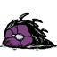
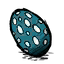
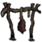

{kind=link}
{kind=link}
{kind=link}
{kind=link}


×3

×6

×6

| “ | I am mighty! No one is mightier! | ” |
| –Wolfgang | ||
Wolfgang is the strongest character in the game, potentially dealing double the damage of other characters when in his mighty form, in addition to gaining extra health and a slight speed boost. These benefits depend on the hunger value when he is in mighty form. For example, when hunger is capped at 300 Wolfgang will deal 2x damage, have 300 HP and gain the maximum speed boost, but as hunger decreases so will the magnitude of all three of these stats.
Here is an image showing you the various forms as well as the different gains/losses in health and damage. Wolfgang's hunger will decrease 3x faster when in Mighty/Mightiest form, 1.5x faster when in Normal form, and 1x when in Wimpy form. Due to the increased hunger drain when in mighty form, it is advised to only eat foods when necessary (before combat, avoid starvation, etc.).
Time-lapse of Health to Hunger ratio for Wolfgang. From full health, right down to death.
Because Wolfgang's health pool also increases/decreases depending on hunger, it is actually beneficial to hold off on healing until he is wimpy form. For example, after combat Wolfgang is at 40% health in mighty form. If Wolfgang heals now, he will have to heal a significant amount of HP, which requires more resources. Instead, the player should wait until wimpy form, at which point each % of total HP is smaller and thus getting back to 100% health will be more efficient. The visual added by Krayziepop is very useful to see how this might work.
Wolfgang has the potential to 2-hit spiders or frogs with a spear, or make short work of intimidating mobs such as Depth Worms or Terrorbeaks that other characters would take longer to kill off. The stronger the weapon, the higher the benefits of his Mighty form. This coupled with his health boost suits players who enjoy combat or who prefer his extra strength to survive in harsh environments such as caves, ruins, etc.
Despite Wolfgang's strengths, if you are not thriving in your game then you will more likely notice his weaknesses. He seems to always be hungry no matter how much you feed him, and before you know it your sanity is below half because of the drain from nights/caves. Success on Wolfgang depends highly on your ability to constantly create filling foods and sanity-restoring items. Venturing into the caves is particularly draining on sanity levels if you are unprepared, and facing multiple worms in addition to hallucinations is one of the worst situations to be in. All this is easily countered though, and with time you won't find them to be too harsh on you.
Plenty of crock pots and drying racks, with one birdcage = standard base for Wolfgang
The first few days should be spent in nomadic fashion, only stopping to chop down necessary trees/boulders for wood, rocks, flint and gold. During the nights, try to find groups of trees (not forests) that can be burned for charcoal, which you will need later for crock pots and dry racks. This way, you will not even have to build a campfire and continue being productive at night. To counter the sanity drain in the first days, make sure to make a Garland (or a Top Hat if you can) and pick all the flowers you can when at 195 sanity or lower. Remember that making a garland gives 60 sanity from the flowers you pick to make it too.
During resource collection, you should continue to explore as much as you can. Hopefully you will identify key locations that you want to be close to. This is better achieved by walking along the shore. This way you have an exact idea on the shape of the map and where to find certain biomes. Here is a quick list of important places to look for:
| ×3 |
| ×6 | | ×6 | |
| | |
|
|  | | |  |
As Wolfgang, you can never have enough food. This makes the need for multiple crock pots and dry racks essential to survive effectively. These should always have food ready to be "harvested" because in this state the food never spoils. After making enough food to last a few days, continue until all the pots and racks are cooking/drying something. An Ice Box is also really useful once you find some gears in the Maxwell Biome, usually found near shores.
As explained in the next section, creating long-lasting foods such as jerky and eggs & bacon are extremely useful on Wolfgang because he needs to stockpile a lot of food and keep eating before/during battle.
Diagram showing the important prerequisites for a bee box. Catching butterflies is important to plant flowers close to the bee box and allow faster honey production.
To manage sanity, stockpiling taffies can be an effective strategy. This requires a lot of honey, which can be renewably farmed via bee boxes. Getting this set up takes some time because you need to (1) create bug nets, (2) catch a bunch of butterflies and enough bees for one or two boxes, (3) destroy hives and (4) place the bee box as well as flowers around the box to speed up honey production. (For detailed instructions on how to get this set up, follow this link and scroll down to the bee farm section). Since bees are only active during the summer, this must accomplished before the winter (day 21 on default settings). If you are not planning on venturing into the caves just yet, it might be feasible to forgo this since your sanity will not decrease as drastically on the surface.

Diagram showing the important prerequisites for a birdcage.
A birdcage has many uses, but for a character who hunts and gathers a lot of monster meats like Wolfgang, it is almost essential to have. As you explore the map and find key locations, keep in mind the prerequisites for building this important structure - which includes trapping a live bird, papyrus, etc. Once you have this, you can feed cooked monster meat to the bird to yield one fresh egg, which can be used to create foods such as meatballs, bacon & eggs, etc.
Spiders drop monster meat, which form a staple part of Wolfgang's diet.
Spiders are one of the most common mobs in the game, and as Wolfgang you can make quick work of them in order to gather their loot. If Wolfgang's hunger is above 250, he can kill a spider with a spear in 2 hits. In addition to the usefulness of glands and silk, the monster meat from spiders will be one of your most valuable food sources throughout the game. This is because monster meat, when combined with other ingredients, can create rich foods such as meatballs and bacon & eggs. Cooked monster meat can also be given to birds in cages to yield endless amounts of eggs.
Below is the recipes for the recommended foods obtainable via monster meat. Also refer to the Crock Pot Guide in case you want more ways to use monster meats.
|  |
 |
|
|  |
|
|  | |  |
Tallbirds drop meat and lay bigger eggs that all help fill Wolfgang's big belly.
Tallbirds provide two important ingredients - tallbird eggs and meat. Once you learn its fighting pattern, it is also quite easy to kite and kill (2 hits before backing off will maximize your damage output while avoiding any hits). However, if you do not feel confident in your kiting mechanics then make sure to wear enough armor since they deal a significant amount of damage. If you manage to find a tallbird fort (not all maps have this), it could potentially yield 20+ meats and 10+ tallbird eggs per visit. Tallbird eggs don't spoil, and meats can be hung on racks even when they start to spoil to yield fresh jerky, so these foods can be collected with the long-term in mind.
Although it might seem tedious to follow their tracks at first, you will find that their loot of 8 meats and a trunk are well worth the time. They are also extremely easy to kill because their attack period is so long (you can land 5 hits before backing off to avoid getting hit). Even if you only have a spear on you, you can easily hunt this beast as long as you kite properly. For more basic information about the Koalefants and how to find them, follow this link .
Known more for their fur and poop rather than their meat, Beefalo are easy prey for Wolfgang if you can manage to pull one away from the herd. To do this, hit one beefalo (or stand near it when it's in heat) and immediately start running. As you run, slow down enough so that the beefalo closest to you engages in its attack animation. Dodge this attack and keep running. You will notice that then the rest of the herd stop chasing you (or won't follow at all if you aggroed one when in heat) while the one beefalo who attacked you will keep following. Once the herd is a safe distance away proceed to kite the lone beefalo. Like the Koalefant, it has an extremely slow attack period and can be struck 5 times before backing off to dodge its attack. Use their meat for jerky/crock pot dishes, and any wool or horns for winter clothing.
Alternatively when you have the resources, you can make a Tooth Trap and place one at the feet of a Beefalo. Since you're nearby it will stand up and not move away from the trap. Everytime it triggers it, reset the trap and then repeat. After 9 times the Beefalo will be dead without any repercutions. This will consume 90% of the trap for one though.
Restoring 6.7 sanity/min, the Tam o' Shanter completely makes up for Wolfgang's extra sanity drain in the dark/caves and easily restores missing sanity when worn throughout the day. It even acts as an insulater for the winter! Coupled with a sewing kit, this is a renewable sanity "aura" that should be used at all times - with the exception of helmets during combat. As mentioned above, go hunt MacTusk as soon as winter begins. It may take several attempts to get because it doesn't drop 100% of the time. MacTusk will respawn every 2.5 days after being killed.
 |  |  |
Not an item you would normally talk about in terms of improving sanity, but in addition to the 25 Hunger and 20 Health bonus, it increases Sanity by 15. This is the same amount as the best sanity-improving foods like taffy or pumpkin cookies.
It is very important to stock up on jerky whenever you can. Your dry racks should never be empty - if they are, then you are wasting precious time (2 days for meat) that this food needs to get ready.
When going on a prolonged journey (caves/ruins), make sure to carry at least 10 jerky to help you stay sane. Given Wolfgang's huge stomach this won't be your main source of food for hunger, so don't eat them too soon. Their amazing keeping time of 20 days will allow you to hold onto them until your sanity drops significantly.
| | |
 |  |
Not as good as jerky but much easier to obtain once you have a good bee farm going. The -3 HP penalty is negligible on Wolfgang, and a keeping time of 15 days is long enough to hold onto for a prolonged journey.
Note: These do not include items in the "Ancient" tier, because those provide the best benefits. Items are selected based on availability and usefulness.
As indicated in the "Managing Sanity" section, the Tam o' Shanter provides the best sanity aura out of any item and should be obtained as soon as possible. Dropped by MacTusk at a 25% drop rate, you will need to (on average) kill around 4 MacTusks to get this item - which is difficult given the winter conditions and the rarity of walrus camps. Once you have this, though, you can use a sewing kit to repair the Shanter.
The tent is another item that is useful to restore sanity and health, but at the expense of hunger. The best times to use a tent is when your sanity is extremely low or when your hunger is very low anyway and you could use the health/sanity gains. Always make sure to have food ready to eat after you use the tent.
A late-game item built with slurper pelts dropped by slurpers in the ruins, it reduces hunger loss by a whopping 60% while also giving a minor 2+/min sanity aura (which when coupled with the Shanter will make sanity a non issue). As long as you use the sewing kit to repair it every 5 days (37% and below) this will last you forever. In a situation where you don't need to be carrying a backpack around, equipping this item outside of combat can help Wolfgang sustain a long journey without devouring all of your food in one day. Just remember to switch this with your armor when you begin a fight, since it will not give you any protection against incoming attacks (Unless you have a Shelmet or Thulecite Crown. The lower armor rating is neglegible when compared to twice the duration of Mighty form).
With this item Wolfgang will lose 30 hunger a day when wimpy, 45 when normal and 90 when mighty. Wes without the belt loses 93 per day.
Wolfgang is the strongest character in the game, capable of hunting the scariest of beasts. However, he relies on constant hunger management as well as sanity buffs/foods that are difficult to come by early in the game. The focus early game should be to set up a base camp and begin accumulating food - not just for the winter but for hunting mobs more effectively. Once the core set of items and structures are obtained, Wolfgang really starts to shine because you can consistently keep him in Mighty form.
For beginners, it is recommended that you gain some experience playing as another character such as Wilson or Willow in order to understand the game mechanics and food/cooking system. Once a player feels confident that he/she can keep Wolfgang's belly full, then it is time to really enjoy the benefits of this awesome character! And if you can get your mits on a Belt of Hunger, there's just no stopping him.
Guide created by DatDragon, owned by everyone
Please feel free to edit, but make sure to leave a comment in case others want to know the reasoning behind the change!
Special thanks to TeoSS69 for his insights and feedback about the guide.
| Game Guides | |
| Basic | Getting Started • All About Night |
| Camping | Base Camp • Frog Pond Camp • Self-sustaining Settlement • Marsh Camp • Camping Underground |
| Farming | Gold Nugget Farm • Renewable Farming • Woodie's Curse • Farming • Nightmare Fuel Farming |
| Survival | Adventure Mode • Mob Killing • How To not starve • How to survive • Hound Wave Survival • Mushroom Guide • Spelunking Guide • Winter Guide • Crock Pot Dishes • Teleportato Rush Guide • Panic Room Guide • Just Spawned • Advanced World • World vs Caves |
| Technical | Excrement Extraction Guide • Physical Damage Absorbtion • Console Commands |
| Characters | Wendy • Wolfgang • Wickerbottom's Books |
{kind=link}
{kind=link}
{kind=link}